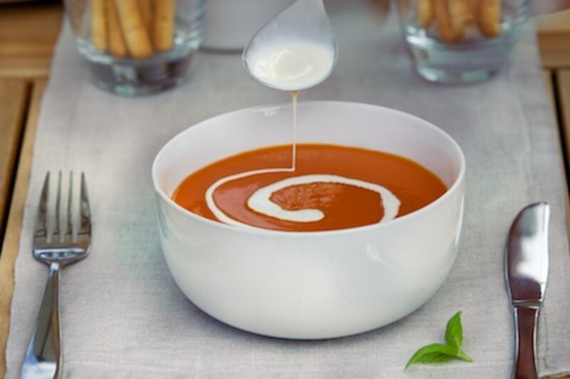
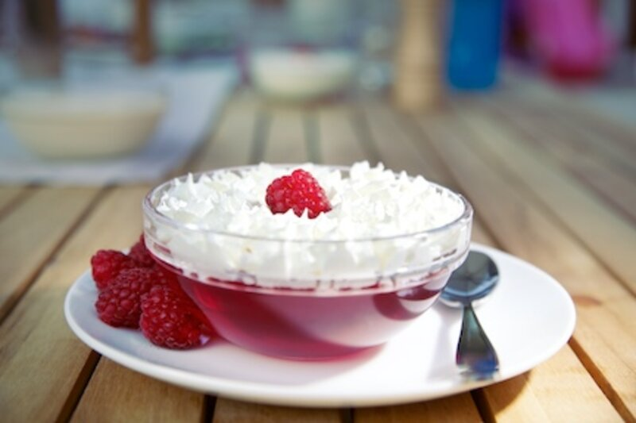
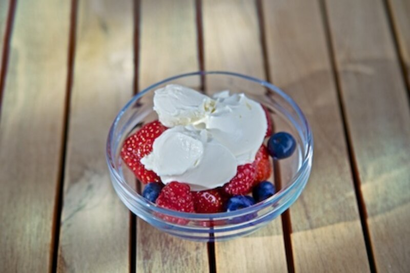
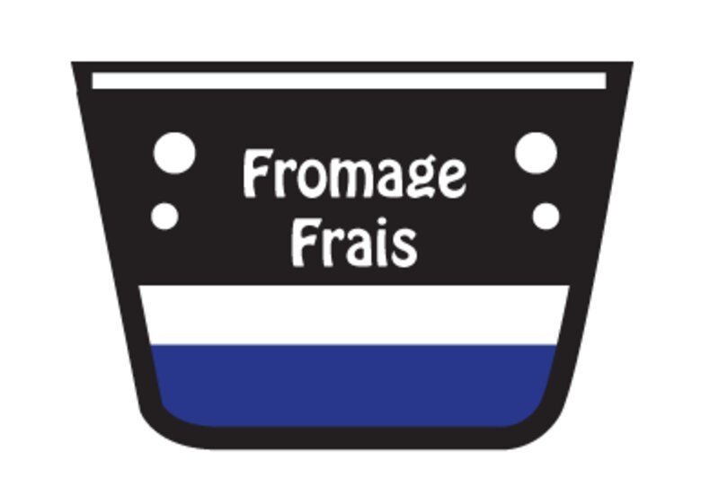
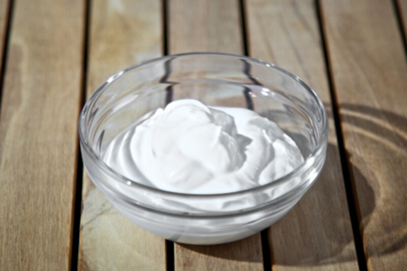
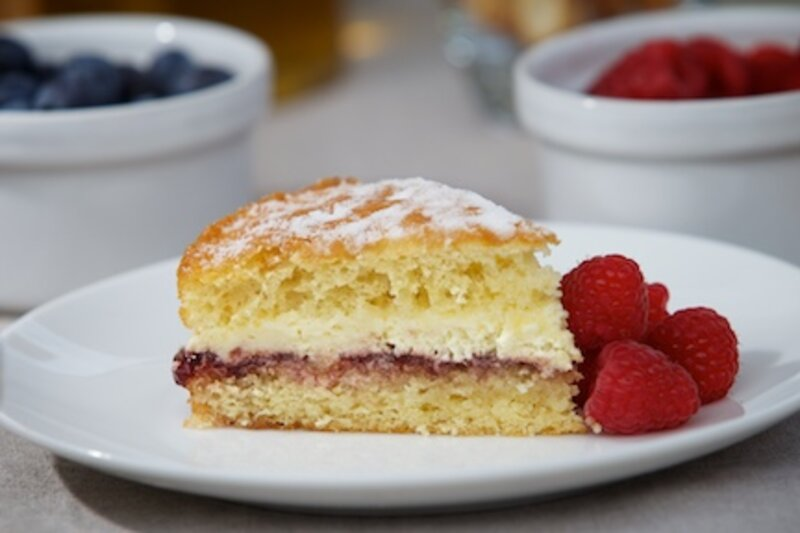

Product area
Cream - complex, luxurious and indulgent
Cream is a highly flexible and complex food material used in a wide variety of food products and as a stand alone product. Typically 'cream' refers to the yellowish fatty substance present in cows milk although cream can be.
In todays modern food environment, cream can be found as single, double or cooking cream and can be used as a topping on desserts, or a filling in pastries. Savoury foods such as sauces and salad dressings can also incorporate cream to add some luxurious mouthfeel and taste to products. Its wide variety of uses and natural seasonal variability require a host of different technologies depending on the desired product process and cost target.
Applications
8 product types in this area.
Every one of these is a formulation route we have already walked. The detail page tells you what the product has to do and where the technical work usually sits.
Coffee cream and whitener
Coffee cream and whiteners come in the form of either liquid or granular substances as a.
Open
Cooking cream
Cooking creams are generally neutral pH products and can be found with different fat contents.
Open
Cream topping
Dairy cream toppings have been developed in order to provide lower cost and more stable.
Open
Creme fraiche
Crème fraiche originated in the Normandy region of France, from the town of Isigny-sur-Mer. It.
Open
Fromage frais
Open
Sour cream
A wide range of fermented cream products can be found in the supermarkets and vary from 3 to.
OpenVegetable non dairy
Vegetable fat creams are cream-like oil-in-water emulsions, whilst non-dairy creams are as the.
Open
Whipping cream
Whipping cream first became popular in the 16th Century, when it was called milk-snow, and was.
OpenBring us the product.
Tell us what it has to do, how it is produced and where it currently fails. We will tell you what is possible.